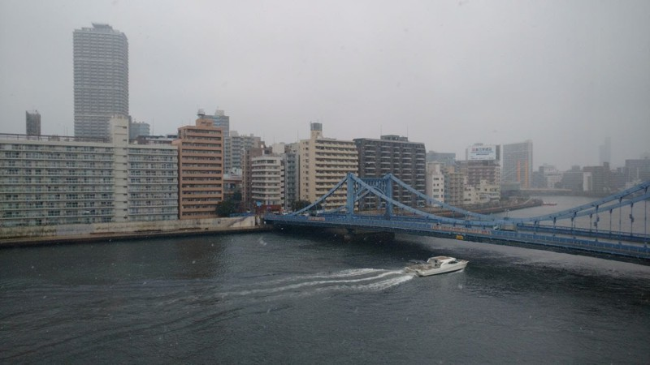

computing : games & art : research
sitemap
|
|
home
computing : games & art : research sitemap |
— E79I59 (JPEG) - view original (110 KiB, JPG)
Most of my free time is spent developing videogames. You can also find my games at lartu.itch.io.
Most of my games are released for free, although donations are always welcome on platforms that support them. Except in some very rare instances, no source code is provided for them.
I'm not a photographer by any means. When traveling I do like to take pictures of places I like. Some of my photos have been uploaded to adorn the lartunet. I haven't made a full album available publicly yet, nor I plan to. This doesn't mean I won't in the future.
The names of the photos depicted on this website are a hash based on their original filename to mantain consistency, general aesthetic and for convenience. There's no real meaning to them. There's also no actual meaning to the photos I display here, just places I enjoyed observing.
I write music for my videogames. There are hours and hours of soundtracks that I haven't uploaded anywhere yet, but I might in the future.
Maybe on Bandcamp. The soundtrack for all my games is available to download for free on their respective itch.io subsites.
At some point I also composed some lo-fi hip hop such as Polaris Quine and MOXWave.
I would love to write a tracker someday.
«Of course, food is a human need and can be seen as a science, but we have transformed food and its preparation into something more than just a basic human need. We have made eating an experience, and the preparation of food an art form»
Sometimes I enjoy cooking (and I do enjoy eating even more). I have compiled a few recipes I enjoy in the cookbook.